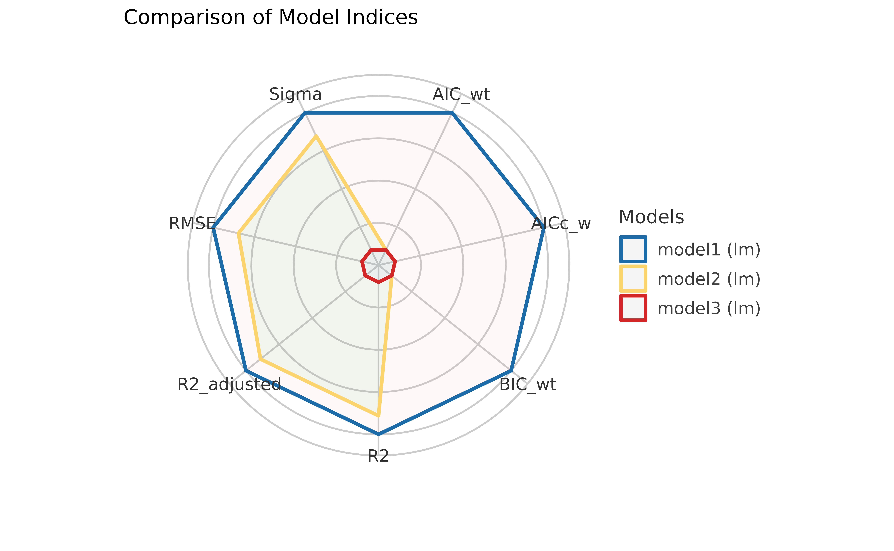

Comparing vs. Testing
Let’s imagine that we are interested in explaining the variability in
the Sepal.Length using 3 different predictors. For that, we
can build 3 linear models.
model1 <- lm(Sepal.Length ~ Petal.Length, data = iris)
model2 <- lm(Sepal.Length ~ Petal.Width, data = iris)
model3 <- lm(Sepal.Length ~ Sepal.Width, data = iris)Comparing Indices of Model Performance
The eponymous function from the package, performance(),
can be used to compute different indices of performance (an umbrella
term for indices of fit).
library(performance)
library(insight)
library(magrittr) # for pipe operator
# we will use `print_md` function to display a well-formatted table
performance(model1) %>%
print_md()| AIC | AICc | BIC | R2 | R2 (adj.) | RMSE | Sigma |
|---|---|---|---|---|---|---|
| 160.04 | 160.20 | 169.07 | 0.76 | 0.76 | 0.40 | 0.41 |
But for multiple models, one can obtain a useful table to compare
these indices at a glance using the compare_performance()
function.
compare_performance(model1, model2, model3) %>%
print_md()| Name | Model | AIC (weights) | AICc (weights) | BIC (weights) | R2 | R2 (adj.) | RMSE | Sigma |
|---|---|---|---|---|---|---|---|---|
| model1 | lm | 160.0 (>.999) | 160.2 (>.999) | 169.1 (>.999) | 0.76 | 0.76 | 0.40 | 0.41 |
| model2 | lm | 208.2 (<.001) | 208.4 (<.001) | 217.3 (<.001) | 0.67 | 0.67 | 0.47 | 0.48 |
| model3 | lm | 372.0 (<.001) | 372.2 (<.001) | 381.0 (<.001) | 0.01 | 7.16e-03 | 0.82 | 0.83 |
If you remember your stats lessons, while comparing different model
fits, you would like to choose a model that has a high \(R^2\) value (a measure of how much variance
is explained by predictors), low AIC and BIC values, and low root mean
squared error (RMSE). Based on these criteria, we can immediately see
that model1 has the best fit.
If you don’t like looking at tables, you can also plot them using a
plotting method supported in see package:
library(see)
plot(compare_performance(model1, model2, model3))
For more, see: https://easystats.github.io/see/articles/performance.html
Testing Models
While comparing these indices is often useful, making a decision (for instance, which model to keep or drop) can often be hard, as the indices can give conflicting suggestions. Additionally, it is sometimes unclear which index to favour in the given context.
This is one of the reason why tests are useful, as they facilitate decisions via (infamous) “significance” indices, like p-values (in frequentist framework) or Bayes Factors (in Bayesian framework).
test_performance(model1, model2, model3) %>%
print_md()| Name | Model | BF | Omega2 | p (Omega2) | LR | p (LR) |
|---|---|---|---|---|---|---|
| model1 | lm | |||||
| model2 | lm | 3.45e-11 | 0.19 | < .001 | 4.57 | < .001 |
| model3 | lm | 9.45e-47 | 0.56 | < .001 | 11.52 | < .001 |
Each model is compared to model1.
However, these tests also have strong limitations and shortcomings, and cannot be used as the one criterion to rule them all!
You can find more information on how these tests here.
Experimenting
Although we have shown here examples only with simple linear models, we will highly encourage you to try these functions out with models of your choosing. For example, these functions work with mixed-effects regression models, Bayesian regression models, etc.
To demonstrate this, we will run Bayesian versions of linear regression models we just compared:
library(rstanarm)
model1 <- stan_glm(Sepal.Length ~ Petal.Length, data = iris, refresh = 0)
model2 <- stan_glm(Sepal.Length ~ Petal.Width, data = iris, refresh = 0)
model3 <- stan_glm(Sepal.Length ~ Sepal.Width, data = iris, refresh = 0)
compare_performance(model1, model2, model3) %>%
print_md()| Name | Model | ELPD | ELPD_SE | LOOIC (weights) | LOOIC_SE | WAIC (weights) | R2 | R2 (adj.) | RMSE | Sigma |
|---|---|---|---|---|---|---|---|---|---|---|
| model1 | stanreg | -80.02 | 8.35 | 160.0 (>.999) | 16.70 | 160.0 (>.999) | 0.76 | 0.76 | 0.40 | 0.41 |
| model2 | stanreg | -104.22 | 9.26 | 208.4 (<.001) | 18.52 | 208.4 (<.001) | 0.67 | 0.66 | 0.47 | 0.48 |
| model3 | stanreg | -185.70 | 7.88 | 371.4 (<.001) | 15.76 | 371.4 (<.001) | 0.01 | -1.71e-03 | 0.82 | 0.83 |
Note that, since these are Bayesian regression models, the function automatically picked up the appropriate indices to compare!
If you are unfamiliar with some of these, explore more here.
Now it’s your turn to play! :)